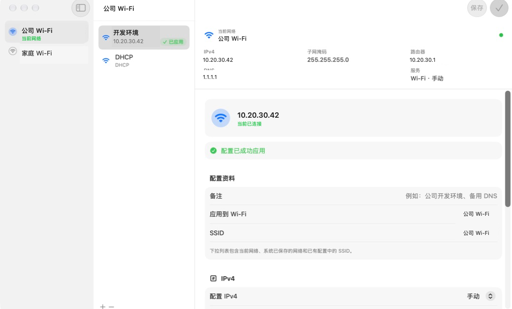
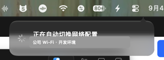
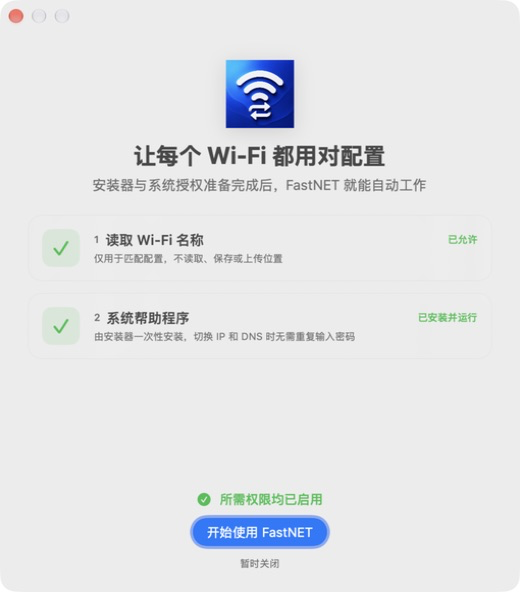

按 Wi‑Fi 自动切换
网络变化时读取当前 SSID，立即匹配并应用指定配置，不再反复打开系统设置。
FastNET 根据当前 Wi‑Fi，自动切换 DHCP、静态 IPv4 与 DNS。公司、家里、实验室，一次设置，之后安静工作。

macOS 会让静态网络设置跟随网络服务，而不是每一个 Wi‑Fi。
少操作，多连接
覆盖从自动识别到手动切换的完整流程，同时保持一款菜单栏工具应有的轻巧。
网络变化时读取当前 SSID，立即匹配并应用指定配置，不再反复打开系统设置。
为同一个 SSID 保存开发、测试或备用 DNS 配置；指定一套自动应用，其他配置随时手动切换。
支持 DHCP、静态 IP、子网掩码、路由器与多个 DNS，还能在手动 DNS 后自动附加默认地址。
从菜单栏快速查看状态。自动切换时，原生消息气泡会告诉你正在应用哪一套配置。

三步完成
通过原生 PKG 完成一次管理员授权，部署功能受限的系统帮助程序。
选择 Wi‑Fi，填写 IP 与 DNS，并指定连接后自动应用的配置。
FastNET 在网络变化时安静完成切换，成功或失败都会给出明确反馈。
首次打开时集中完成 Wi‑Fi 名称权限与帮助程序检查。授权完成后，界面会自动更新，不需要来回确认。

隐私与安全
FastNET 不创建账户、不上传配置，也不包含遥测服务。位置权限仅用于读取当前 Wi‑Fi 名称，不读取定位坐标。
常见问题
macOS 要求应用获得位置服务授权后，CoreWLAN 才会返回当前 Wi‑Fi 名称。FastNET 只读取 SSID，不读取或保存定位坐标。
修改系统网络设置需要增强权限。安装器会一次性部署功能受限的帮助程序，因此日常切换不必反复输入密码。
不会。正常退出 FastNET 时，帮助程序会同步结束；下次启动应用时再按需恢复。
当前版本需要 macOS 26 或更高版本，并面向 Apple Silicon Mac 构建。